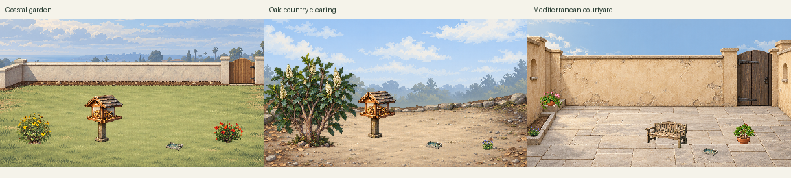
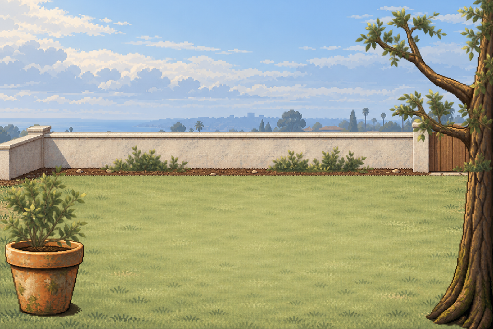
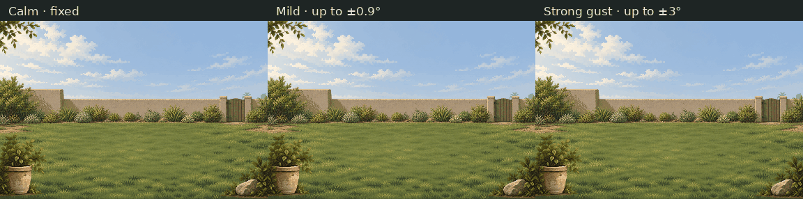
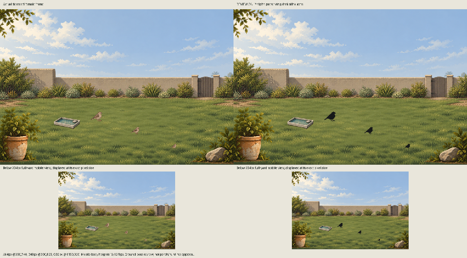
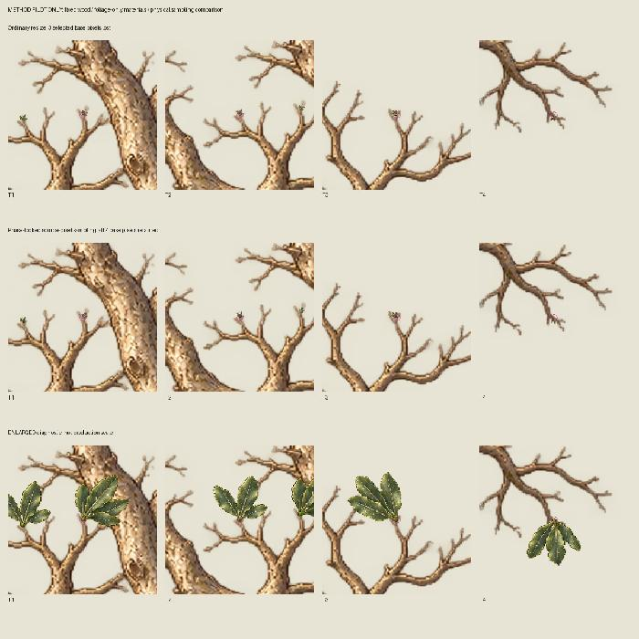

ChirpNeighbors production tracks
Updated 2026-10-17T18:08:41.030754+00:00. This is a derived view of the existing expansion intake, not another tracker or canon.
Visibility: the four workers are nested under the one visible delegated yard-production task. They are separate parallel workers with disjoint folders, not four separate top-level chats. Worker task names are shown as identifiers; no unsupported chat links are invented.
San Diego first-release starter collection
Complete saved starter yard with selectable backgrounds and shared editable local plants/objects; birds supplied by separate canon workstream.
Sky/distant scenery/ground form backgrounds. Optional compound alpha layers are scene dressing, not individually editable plants. Shared independent sprites retain canonical IDs, anchors, footprints and z-order.
Provisionally usable at normal small display unless obvious contact/readability failure. No owner/runtime acceptance inferred. Other regions/themes after first-customer San Diego milestone.
Starter intake manifest and compatibility groups
Latest incremental handoff and direct art IDs: San Diego starter manifest,3cleanbackgroundchoices,sharedplaceables,fullsource/evidence links and explicit baked/editable inventory; Mac receipt pending.
Canonical requirements and tracker remain authoritative. First-batch delivery remains preserved: verified package handoff. That handoff contains actual Library IDs and hashes for 12 objects, 9 plants and 3 yards; it does not imply integration or acceptance.
Actual art and motion previews
These are generated art or explicit review derivatives. Procedural motion is an offline preview; no app integration or owner acceptance is implied.





| Worker | Current concrete batch | Concrete status | Generated outputs | Review / canon intake | Next queue |
|---|---|---|---|---|---|
Backgrounds/root/yards | scene.san_diego_oak_riparian_shade_pocket sky_distance, ground_boundary, foreground scene.san_diego_compact_marine_courtyard sky_distance, ground_boundary, foreground | Oak and Mediterranean static candidates delivered; three clean starter choices 7 actual imagegen originals preserved this increment; no active calls. Source1536x1024, common declared16:9 crop to960x540/384x216. Optional oak compound dressing remains leaf-only HOLD; clean defaults omit it. Actual Mac fit/intake pending. | distance-r1.png SHA256 bb786b14ac66fc4a4a4e0d8c0ca28b67a0ebbb608e5671a71ff3975edcb4c463 flexible-foliage-r1.png SHA256 f9c87e865ae7db2e4436d05d7ee336c126584a8df78833d3ffa77a7557aebc7b ground-boundary-r1.png SHA256 f4011d45977066e6152e9ad1f9c54834e8cb4648ceddacb80c1df2373692e70d rigid-edges-r1.png SHA256 be06e2058d160fa8deb4b6a681836f382024821f315e4f6d39bf29143a825ed5 courtyard_structure.png SHA256 4f78d92a2e031a47a477ee3670277cb4f93462eee42a54cdb9f5501ec87e30f0 distance.png SHA256 f91c085abb6dafda6cfeec2444bd20081ab42c5dbfc6d156be51aa9d178fae4f distance-r1.png SHA256 2301bb9d9d8995cf28e039f3136ad2057a213fded8f882a72c0a876ae5d1f1c6 distance-r2.png SHA256 d612dd9e851c6af4828cdd478e95b46b83f258c36801007140ea48bdabda97fd ground-r1.png SHA256 e325eac4fa8d3dedf31fcee6309e4e31837f86df48387f15087898abdaa170ef oak-foliage-r1.png SHA256 d696100ec8e7df64cfd27965ab31910a40ba8462d1c155f1542ec1c5e068c9be oak-wood-r1.png SHA256 47c185a5970f7e9b8653c8b8a993aa6a62d71ac11aec9d454279176d25a9d94a distance-r1.png SHA256 d7dff3aebc0d80b765e47f7c2ce937476fffa211dd8d119c435285bff7b95da5 foreground-r1.png SHA256 78e87fbe0813e147eb29330516e5a534b87373391ce1a52568558d3c46b036fe ground-r1.png SHA256 d66d030867423a7d9b9e1d9f3d56648c0df3e167175c00943c344ce407c2df46 courtyard-proof01-production.zip (4968300 bytes) | Practical provisional candidate review; owner/canonical/runtime acceptance pending Parent reports earlier deliveries queued. Exact per-package Mac commit / remote SHA / PR receipt: pending. | Reconcile starter assets into canonical Mac intake and obtain commit/remoteSHA/PR receipt; Resolve functional/plant placement and actual scene fit at normal display; Prioritize starter state/wind gaps; other regions/themes deferred |
Trees and leaves/root/trees_leaves | plant.engelmann_oak wood_scaffold, canopy_healthy, leaf_healthy, leaf_older_dry, acorn_mature, leaf_acorn_litter | Starter tree/plant audit complete; independent oak gap explicit Existing Torrey/sycamore independent sprites preserved. Full Engelmann attachment HOLD and experimental leaf masks excluded. No additional tree generation this increment. | foliage-only-clusters.png SHA256 3191fceb3bf123a59f18bf488000292d74589b8dc8d0f5c75f38f59c0a607fff engelmann-oak-canopy.png SHA256 a1b3846634e2ad5b2d50c8afbaf111a2662475f51fa4004dcfaca636392f07b2 engelmann-oak-leaf-acorn-sheet.png SHA256 49d43b3e6ffdaf2cc31f8091b10d9ed0f8be6e540cbe80c5af47d4d147f15997 engelmann-oak-wood.png SHA256 e9b25f1f605bb4edc6afb6cd6726de778c348960ab97f341a3640f7d25c44d92 sycamore-bare-wood.png SHA256 a6540344697300510dfe9069c9c1b9a1cc9885321f37beac6651d9fe20b43f8a sycamore-canopy-healthy-initial-clipped.png SHA256 49b3b49437f34a62d2fe3b11bdbc7350b7ddcf07dc041b7ba99d9f1978766078 sycamore-canopy-healthy.png SHA256 9d64f7e3eedf94710092091fbcc10625a282aabca2d7dc6d784e065bf04a23c4 sycamore-canopy-sparse.png SHA256 759842a5da78e8ed56381ddb0fa3b908ed122497cac5ff79ce70906d4a821f33 sycamore-leaves-litter.png SHA256 286eff60dad4d6568fead1ed6eb27f2110ac6b333de10a7784bf577cecabfc9f torrey-pine-canopy.png SHA256 824da943a9fafff59041ca68f1af93d0f3c11390205aaa4523b190f5a5c738ce torrey-pine-needle-correction.png SHA256 4d5662f89dc89ce924abf90ff9825f9e08393e198e3f11ea02319bf9c8585ba1 torrey-pine-needles-cones.png SHA256 ae94c998d259e62ed25e21298e440ae6f508e9c4992a50a8428d339007ab6814 torrey-pine-wood.png SHA256 be480b907a676c2a1cc8f3820b39ac3103b88905968670d9c5de8cf2bbcd6cfc sycamore-wood.zip (4458105 bytes) | Practical provisional candidate review; owner/canonical/runtime acceptance pending Parent reports earlier deliveries queued. Exact per-package Mac commit / remote SHA / PR receipt: pending. | Reconcile starter assets into canonical Mac intake and obtain commit/remoteSHA/PR receipt; Resolve functional/plant placement and actual scene fit at normal display; Prioritize starter state/wind gaps; other regions/themes deferred |
Plants/root/plants | plant.purple_needlegrass healthy plant.blue_eyed_grass healthy plant.california_poppy healthy plant.shaws_agave healthy plant.dracaena_trifasciata healthy plant.zamioculcas_zamiifolia healthy plant.chlorophytum_comosum healthy plant.ficus_elastica healthy | San Diego shared plant catalog delivered 52 source variants audited; 29 provisional whole-placeable variants across25families, including19outdoor/patio and6interior-only families. Explicit state alternatives/holds and shared ID compatibility, no new plant art. | nursery-02.png SHA256 fb36266b54986bd85a6bff1d783fc0a353df1f0b5f81a0128c603205fe2c0aad regional-02.png SHA256 479e8f0f80e34f1bfc915031fbe42992a28b163c203380ce33e1dac8c19c791e regional-dry-02.png SHA256 506c748bf2705b2323696726c463b730ced20c90058c02aaffc0409927c6545b purple-needlegrass-morphology-r01.png SHA256 5194416ad67320f360128f85789893f4bf702b3aa54fe858932070e9ac8c368d nursery-03.png SHA256 9d27bb997de78b4910cf8b007ef1d746c8034fc3fa408d801b8a89dd48aab5f0 regional-03.png SHA256 cce427368a03da59b7889a2d9670d0ae12fcf0a987a847af7d134ce65a066eec plants-expansion-regional-02.zip (4450688 bytes) | Practical provisional candidate review; owner/canonical/runtime acceptance pending Parent reports earlier deliveries queued. Exact per-package Mac commit / remote SHA / PR receipt: pending. | Reconcile starter assets into canonical Mac intake and obtain commit/remoteSHA/PR receipt; Resolve functional/plant placement and actual scene fit at normal display; Prioritize starter state/wind gaps; other regions/themes deferred |
Object theme packs/root/objects | object.modern_concrete_planter wave03_candidate object.modern_slat_seat wave03_candidate object.ground_birdbath rectangular_concrete object.modern_slat_screen wave03_candidate object.modern_bollard_light wave03_candidate object.modern_ceramic_pedestal wave03_candidate object.rustic_hanging_lantern wave03_candidate object.xeriscape_shielded_pathlight wave03_candidate | Starter object/editability audit delivered Nine functional/decorative object variants carry copied source anchors/footprints/interaction points. Three reused object variants bundled with six plant variants for the offline starter diagnostic. Behavior/contact calibration pending. | theme-1.png SHA256 2649b0a7b445c03de942a669edfaba70e721e2b93adb5fa131f405b80de7f869 theme-2.png SHA256 64cca06508e07b8c924b84dd65b22c0da2057d71237473806aa0b4d2ab0ec3cf theme-3.png SHA256 849c98a1806dad62c5d861d60d319abcca04317bd6b8f96c994144eb515fc5a1 theme-4.png SHA256 608bb215bf5f7698aac23ae8a0d8ed3a9e357612a9ac0cb364ec0f83956bcd01 theme-5.png SHA256 19271dd1fea7e78146cdef23d10dceeb7a6afc7d9c808db0069f745cd870d96d glazed-pedestal-edit.png SHA256 02fe7cb69259ac74041c8cc3e25fae8dc8c1a3af7062bce1b73bb033b1da9291 sheet-1.png SHA256 357380feaf9777e1ed086e2d0bbb6746f454ba88a8d5d9e1503e0308f6e285ee sheet-2.png SHA256 01f76142bba35794c4a48b5a7514e70ce3a0210068525a06870caa7493287775 chirp-object-theme-1-20261017.zip (5013143 bytes) | Practical provisional candidate review; owner/canonical/runtime acceptance pending Parent reports earlier deliveries queued. Exact per-package Mac commit / remote SHA / PR receipt: pending. | Reconcile starter assets into canonical Mac intake and obtain commit/remoteSHA/PR receipt; Resolve functional/plant placement and actual scene fit at normal display; Prioritize starter state/wind gaps; other regions/themes deferred |
Bounded review passes
Revisions reuse existing primary identities. Prior held originals remain preserved; a revised candidate does not imply acceptance.
review-pass-01: Complete:2 revised candidates plus measured tree attachment HOLD
Needlegrass morphology, ceramic pedestal material, Engelmann branch registration
Prior frozen originals and10archive hashes retained
Canonical intake: pending Mac receipt. Backgrounds: One original analyst-guided3-layer proof delivered; dark-bird/contact readability and owner acceptance pending.
chirp-pedestal-material-review01-20261017.zip (5479123 bytes)
needlegrass-review01-candidate.zip (4424039 bytes)
needlegrass-review01-source-evidence.zip (3206181 bytes)
engelmann-oak-registration-review01.zip (6603880 bytes)
ChirpNeighbors-Pedestal-Review01.png (346910 bytes)
ChirpNeighbors-Needlegrass-Review01.png (606626 bytes)
ChirpNeighbors-Tree-Registration-Review01.jpg (248872 bytes)
review-summary.json (5282 bytes)
courtyard-proof01-production.zip (4968300 bytes)
courtyard-proof01-review.zip (7023544 bytes)
ChirpNeighbors-Courtyard-Proof01.png (1967393 bytes)
ChirpNeighbors-Courtyard-Mobile-Review01.png (306353 bytes)
Prioritized regional and theme matrix
San Diego first; later regions require their own ecological and seasonal review. This is an incremental queue, not a fixed total cap. A queued item does not imply a running tool call.
| Priority | Region | Context | Themes | Status |
|---|---|---|---|---|
| P0 | San Diego | coastal urban | marine morning, clear afternoon, compact urban courtyard | first coastal art preserved; new marine courtyard queued behind reference-pixel gate |
| P0 | San Diego | inland suburban / canyon edge | summer dry, irrigated garden island, dusk | first inland yard preserved; deeper seasonal/dusk background queue remains planned |
| P0 | San Diego | oak / riparian-influenced shade pocket | shade, litter, water-access gating | new background queued; blocked required reference-pixel inspection |
| P0 | San Diego | managed indoor / outdoor patio | container nursery, terracotta, cedar, indoor shelter | first patio preserved; eight nursery/native additions and relevant dry/spent variants delivered |
| P1 | Southern California coastal Los Angeles / Orange County | urban/suburban managed yard | coastal haze, small-lot garden | queued; validate local plant mix before generation |
| P1 | Southern California inland valleys | warmer inland managed yard | heat, dry ground, irrigated pockets | queued; no universal irrigated greenery |
| P1 | California Central Coast | oak woodland / coastal garden | foggy distance, oak litter | queued; region-specific taxa and phenology review required |
| P2 | Southern California low desert | desert-adapted courtyard | desert shade, managed containers | queued; separate desert flora and hydrology, not coastal default |
| P2 | Pacific Northwest | temperate rainy urban garden | conifer distance, wet ground, cool-season variation | queued; new species/state palette required |
| P3 | Eastern North America | deciduous suburban yard | leaf-on, senescence, bare winter | queued; existing eastern species remain general-pack candidates, excluded San Diego defaults |
Yard composition and wind matrix
Distinct original compositions share inspected bird/prop lighting and pixel-density references. Required wind parts are plans until separately generated and rigged. The rendered courtyard wind preview currently moves one compound branch/foliage piece; it does not implement the full hierarchy.
| Composition | Original arrangement | Placement and wind requirements | Current status |
|---|---|---|---|
| Coastal garden — pale clearing and offset border scene.san_diego_coastal_urban / wave04_coastal_garden_v1 | An off-center open garden clearing in pale decomposed-granite/short managed-ground tones, a shallow muted native border with varied gaps, low warm boundary, and pale neighborhood/canopy distance. A small rigid pot at far left and slim cropped woody support at far right frame asymmetrically; no broad pergola, ocean panorama or central feature. | 3 proposed placement slots. Flexible parts required: small_branches, foliage_masses, grass_tips. Rigid objects and contacts stay fixed. | Four actualsource layers delivered;6partialspatialfoliagegroups. Registration/rig/canonacceptancepending. |
| Shaded oak garden — light litter clearing scene.san_diego_oak_riparian_shade_pocket / wave04_shaded_oak_garden_v1 | Intimate garden pocket under one substantial side oak, with an offset pale opening, fine peripheral litter and understated stone retaining edge. Preserve a lighter neutral ground clearing rather than a dense dark lawn. A conditional moist planted margin is confined to one edge. | 2 proposed placement slots. Flexible parts required: small_branches, foliage_masses, grass_tips. Rigid objects and contacts stay fixed. | Generated/reviewed provisional static candidate; clean-ground available, canonical Mac intake pending |
| Compact Mediterranean courtyard — warm stone pocket scene.san_diego_compact_marine_courtyard / wave04_mediterranean_courtyard_v1 | A small enclosure with warm buff plaster returns, one shallow stone step at a side, quiet pale warm-gray paving, and an asymmetrical narrow gate opening. Keep the center open for iron/wood/terracotta placeables; small planted wall pockets frame only side edges. No pergola or broad vista. | 2 proposed placement slots. Flexible parts required: small_branches, foliage_masses, grass_tips. Rigid objects and contacts stay fixed. | Generated/reviewed provisional static candidate; clean-ground available, canonical Mac intake pending |
| Urban balcony — sheltered rail-side garden scene.san_diego_urban_balcony / wave04_urban_balcony_v1 | An intimate exterior balcony with a simple narrow rail at rear, pale city haze between neighboring façades, and low neutral deck staging. A rigid railing planter near one side and a small floor pot at the opposite side support sparse flexible plant masses. No interior room or panoramic high-rise scene. | 2 proposed placement slots. Flexible parts required: small_branches, foliage_masses, grass_tips. Rigid objects and contacts stay fixed. | Queued only; proposedwindcaps/stiffness/pivotpolicy recorded, no generatedart or rig for this variant. |
| Lush cottage/native border — flower-edge clearing scene.san_diego_cottage_native_border / wave04_cottage_native_border_v1 | A gently curved planted border beside a small cottage-style garden opening. Varied restrained flowering masses and fine native/cultivated texture stay along the back and sides; the central open ground is quiet and light. A low timber edge and one short side support give domestic scale without a fantasy cottage centerpiece. | 2 proposed placement slots. Flexible parts required: small_branches, foliage_masses, grass_tips. Rigid objects and contacts stay fixed. | Queued only; proposedwindcaps/stiffness/pivotpolicy recorded, no generatedart or rig for this variant. |
Object design collections
Design theme, material/color, size, weathering, functional affordance, region, and seasonal/holiday overlays remain separate dimensions. Existing props are reused by identity. Each collection plans matching planters, seating, feeder/bath, fence/trellis, lighting and decorations where relevant.
| Collection | Priority and current production |
|---|---|
| Spanish Mediterranean Courtyard | Priority first: six family slots covered by generated/reused candidates; no owner acceptance |
| Coastal Cottage | Priority first: six family slots covered by generated/reused candidates; no owner acceptance |
| Modern Minimalist | Six family slots generated as candidates; ceramic pedestal material revision under review. Reuse existing IDs; no owner acceptance. |
| Rustic Woodland | Hanging lantern candidate delivered; remaining matching collection gaps stay queued and must reuse existing mapped props. |
| Desert Xeriscape | Shielded pathlight candidate delivered; remaining matching collection gaps stay queued and must reuse existing mapped props. |
| Cottage Garden | Matching collection gaps remain queued; no new generation during this bounded hold-review pass. |
| Small Urban Balcony | Priority first: six family slots covered by generated/reused candidates; no owner acceptance |
All generated art is candidate material. Wind attachments, season/state slots and interaction footprints are metadata, not animation or physics. New deliveries target files below 8 MB. Parent relay coordinates Mac canonical ingestion, commit, push, PR and verified remote SHA; those steps remain pending. No application or Git changes have been made here.